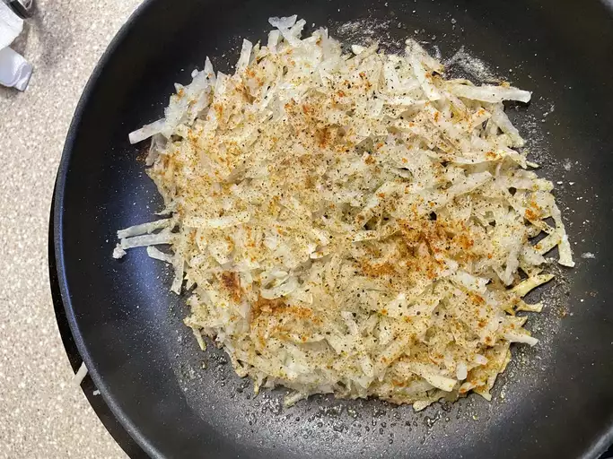

Hash Brown
Description
This hash browns recipe fries shredded potato in clarified butter for diner-style hash browns that are crispy on the outside and fluffy on the inside.
Ingredients
- 2 russet potatoes, peeled
- 3 tablespoons clarified butter
- 1 pinch cayenne pepper, or to taste
- 1 pinch paprika, or to taste
- salt and ground black pepper to taste
Instructions
- Gather all ingredients.
- Shred potatoes into a large bowl filled with cold water. Stir until water is cloudy; drain and cover potatoes again with fresh cold water. Stir again to dissolve excess starch. Drain potatoes well, pat dry with paper towels, and squeeze out any excess moisture.
- Heat clarified butter in a large nonstick pan over medium heat. Sprinkle shredded potatoes into hot butter in an even layer; season with cayenne pepper, paprika, salt, and black pepper.
- Cook potatoes until a brown crust forms on the bottom, about 5 minutes. Flip or stir and continue to cook until potatoes are browned and crusty all over, about 5 more minutes.
- Enjoy!